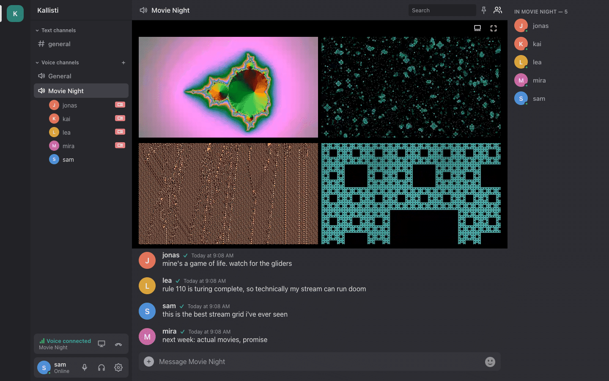
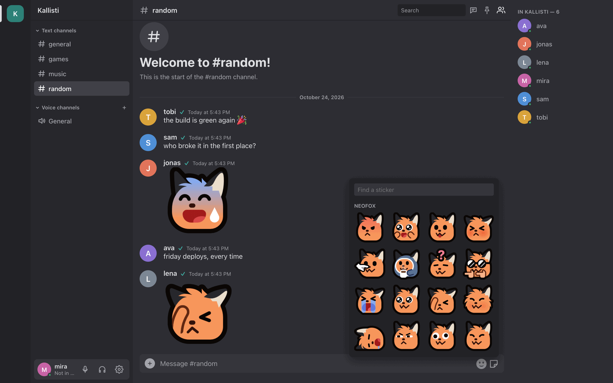

Everything it does
Voice, video and chat for your group, on a server that belongs to you. Here is all of it, from talking in a channel to running your own server.

Voice
- Join with one click. Voice channels are always open; click one and you are in.
- Push-to-talk or voice activity, and hold-to-talk on phones.
- Noise suppression (RNNoise or DeepFilterNet) and echo cancellation, each with a switch.
- A volume for each person, join and leave sounds, and a quality icon with connection stats.
- Music mode: stereo at 128 kbps, without the filters made for speech.
- Listen-only channels for talks and radio. built-in server
- Recording for moderators: one file for each speaker. built-in server

Video and streams
built-in server All of video needs Kallisti's own voice server.
- Go Live with your screen or your camera, and change the quality while you are live.
- Several streams at once, side by side in a grid or one big in focus.
- Stream from OBS (or any WHIP encoder) straight into your voice channel.
- Previews of live streams, so you see what is on before you watch.
- Mumble users hear the stream in their channel.

Chat
- Text channels with history and remembered read state, sorted into categories. categories: built-in server
- Threads for side conversations.
- Replies, reactions and mentions, also @here and @everyone; reply without a ping.
- Pictures, files, video and audio that play in the chat, and link previews.
- Formatting, code and spoilers; long messages fold up.
- Pins, message links and search with filters.
- Direct messages.
- Invite-only channels with invite links. built-in server
- Ctrl+K finds any channel; mute channels, block people.

Emoji, stickers and profiles
- Your server's own emoji, suggested as you type
:name. - Personal emoji that go with you to every server; take one from someone's message.
- Big emoji when a message is only emoji.
- Stickers: large pictures, also animated, sent from their own picker and found by name or emoji. built-in server
- Your server's sticker packs, added by moderators, many at once.
- Avatars, a status with emoji, and a bio.
Log in with
- A Kallisti account
- Your fediverse account: Mastodon, Pleroma, Akkoma, GoToSocial
- As a guest, if the server allows it
Accounts
- Log in with your fediverse account, link it to an existing account, and show your verified handle.
- Guests can drop in without an account; the server can make them read-only.
- One account on several devices: voice on one, chat on all. built-in server
- Mumble apps log in with the same account and password.
Moderators can
- Mute, move, time out, kick and ban
- Delete messages, also many at once
- Turn on slow mode
- Record a voice channel
Moderation
- Admins and moderators, made with one click in the app, and moderators for single channels.
- Slow mode, a word and link filter, and limits for new accounts. built-in server
- A captcha at sign-up, with no third party. built-in server
- Bans that also hold for Mumble clients.


Phone and desktop
- In the browser, nothing to install.
- On your phone: install it from the browser as an app, with push notifications and an unread badge. built-in server
- Apps for macOS, Windows and Linux, with native notifications; the desktop app also connects to plain Mumble servers.
- Dark or light, as you like it.
Your own server, in three commands
git clone https://github.com/lambadalambda/kallisti && cd kallisti
printf 'DOMAIN=chat.example.org\nSUPERUSER_PASSWORD=%s\n' "$(openssl rand -hex 16)" > deploy/.env
docker compose -f deploy/compose.yml up -d --remove-orphansYour own server
- One Docker setup with the voice server and HTTPS in it, or run it in front of the Murmur you already have.
- Behind your own proxy, with Cloudflare and no port 80, with systemd, or on Kubernetes.
- Your messages stay on your machine, with a daily database backup.
- Free software, in the public domain.
Mumble users keep
- Their client (Mumble 1.3 or newer)
- Whispering, linked channels, positional audio
- Rights (ACLs), groups, certificates
For Mumble users
- Friends without Mumble join the same channels from a browser.
- Text channels show up as channels, and what was said there arrives when they come in.
- Pictures, files and replies reach them as well.
- A real certificate, so the client connects without a trust question.
built-in server These features need Kallisti's own voice server. In front of an existing Murmur, everything else works. What works where →